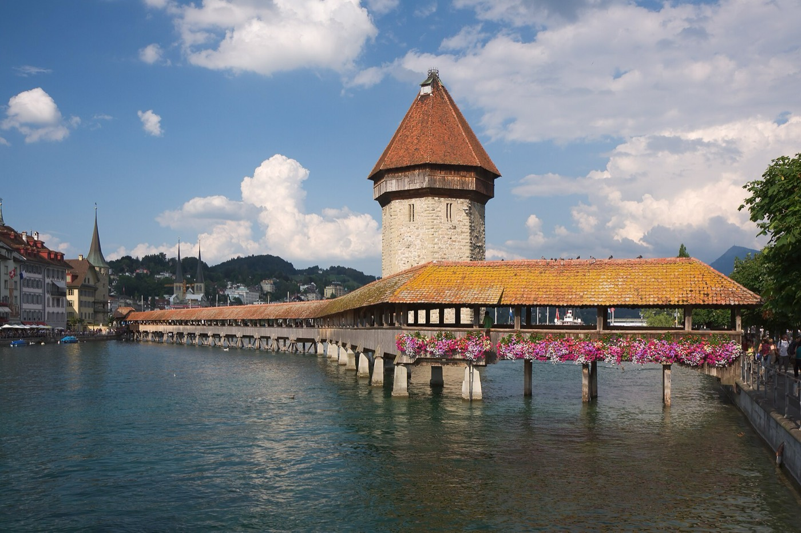
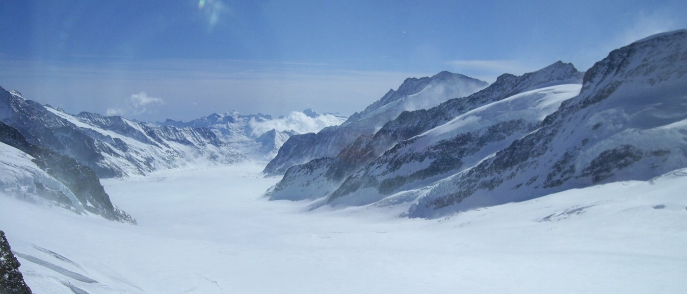
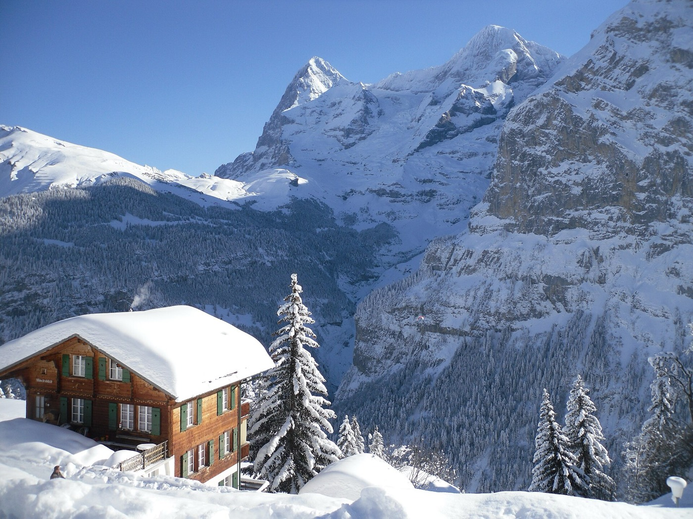
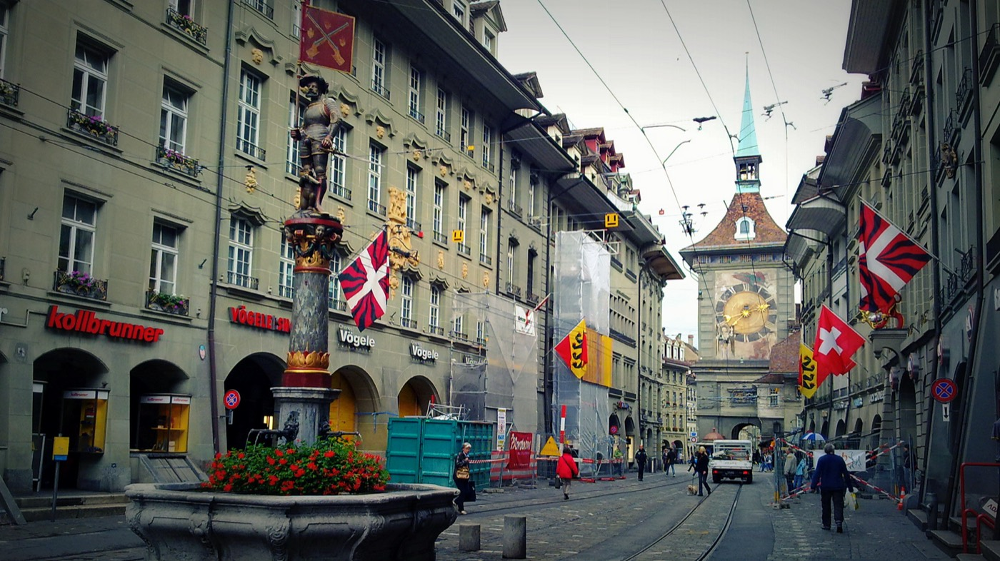

Плотный маршрут на 7–10 ноября 2026 с базой в Antara, Lauterbrunnen. Главный принцип: световой день отдаём видам и прогулкам, переезды — после заката.
Ключевая идея: 7–9 ноября солнце садится примерно в 17:04 → 17:03 → 17:02. После 17:00 не жалко ехать на поезде; примерно к 17:35 заканчиваются гражданские сумерки.
ОБЯЗАТЕЛЬНО Jungfraujoch при хорошей видимости, Lauterbrunnen, Mürren, исторический центр Берна.
ПО СИЛАМ Grindelwald после спуска, Harder Kulm, Lion Monument.
ПЕРВЫМ УБРАТЬ Harder Kulm, длинную прогулку по Grindelwald, дополнительные точки Люцерна.
7 → 9 ноября:
Antara, Lauterbrunnen — уже забронировано.
9 → 10 ноября:
Hotel City Inn Basel — забронировано ✅
Elisabethenanlage 5, 4002 Basel · ~3 мин пешком от Basel SBB
Economy Queen, 2 гостя · +41 61 275 80 00
Оплачено €131 (Booking.com), на месте ещё ~€8 (налог/сборы).
Утром до EuroAirport — прямой Bus 50 примерно за 20 минут.

Не планировать: Musegg Wall как полноценную прогулку — башни в ноябре сезонно закрыты.
Ключевые точки
Готовые маршруты
Old Town Lucerne отмечен через Weinmarkt — удобную точку старого города. Antara открывается как поиск по названию: точный адрес для последнего пешего участка сверяйте с бронью.

Маршрут:
Lauterbrunnen → Wengen → Kleine Scheidegg → Jungfraujoch → Eigergletscher → Eiger Express → Grindelwald → Lauterbrunnen.
Ключевые точки
Готовые маршруты
Горный круг разбит на участки. Google Maps может не показать нужный горный поезд или Eiger Express; сверяйте линии с Jungfrau.ch. Для короткой прогулки по Wengen используйте кнопку точки и вернитесь к вокзалу.


Главная улица + панорама Eiger–Mönch–Jungfrau. Это car‑free village, и сам подъезд через Grütschalp — часть впечатления.
Bern Bahnhof → Bundesplatz → Zytglogge → Kramgasse → Münster → Nydeggbrücke. Если осталось время — BärenPark или Rosengarten.
После Jungfraujoch и Mürren это уже третья панорама. Если из‑за него в Берне останется меньше ~2.5–3 часов — пропускайте без сожаления.
Ключевые точки
Готовые маршруты
В Mürren: от станции BLM пройдите по главной улице и вернитесь тем же путём. Harder Kulm оставлен отдельной точкой: подъём планируйте на фуникулёре после проверки работы линии. Прогулка по Берну разделена на две ссылки; Rosengarten — по силам.
Hotel City Inn Basel — забронировано, рядом с Basel SBB.
Просили тихий номер, окнами не на улицу/трамвай — не гарантировано.
Плюс: вечером приехали из Bern и сразу в номер; утром прямой Bus 50.
Saver Day Pass за 9 ноября заканчивается в 05:00 10-го. Если отель выдаёт BaselCard, используйте её; иначе купите обычный билет.
Ключевые точки
Готовые маршруты
В Google Maps выберите дату 10 ноября 2026 и нужное время прибытия. Проверьте Bus 50 в SBB Mobile; ссылка сама не фиксирует дату поездки.
| Дата | Что | Статус | Ориентир |
|---|---|---|---|
| 7 Nov | Saver Day Pass, 2nd class | Куплен | CHF 52 × 2 = CHF 104 |
| 8 Nov | Jungfraujoch return / круговой маршрут | Покупать ближе к дате | проверить в официальном калькуляторе |
| 9 Nov | Saver Day Pass, 2nd class | Куплен | CHF 52 × 2 = CHF 104 |
| 10 Nov | Bus 50 до EuroAirport | BaselCard или обычный билет | day pass не нужен |
8 ноября дорогой билет на Jungfraujoch лучше не фиксировать сильно заранее: дождитесь нормального прогноза и веб‑камер.
Вы всё равно возвращаетесь из Mürren через Lauterbrunnen, поэтому отдельного крюка за вещами нет.
| Размер | Габариты | Цена до 24 ч |
|---|---|---|
| S | 25 × 75 × 40 см | CHF 8 |
| L | 47 × 93 × 61 см | CHF 10 |
Lockers работают круглосуточно; можно платить банковской картой / Apple Pay.
Можно, но смысла мало. За CHF 10 вы гуляете налегке и не теряете время на возвращение к Antara.
Схема: Antara → 5 мин → locker → Mürren → обратно к той же станции → забрать → Bern.
Хороший обзор долины, Wengen, Jungfraujoch и Mürren. Поможет понять географию региона.
Открыть на YouTube →Aplins in the Alps: по шагам показывает Sphinx, Ice Palace, glacier viewpoints и объясняет, чего ждать наверху.
Открыть на YouTube →Kapellbrücke, Old Town и набережная — после просмотра проще ориентироваться в первый день.
Открыть на YouTube →Практически повторяет наш маршрут: Bundesplatz → Zytglogge → Kramgasse → Münster → Nydegg → Bear Pit.
Открыть на YouTube →Как читать табло, искать платформу, понимать типы поездов и пользоваться SBB.
Открыть на YouTube →Точки и маршруты Google Maps находятся в разделах каждого дня. Переезды разбиты на отдельные участки, прогулки — на короткие маршруты с промежуточными остановками. Расписание выбирайте на дату поездки; для поездов и горных линий сверяйтесь с SBB Mobile и Jungfrau.ch.
SBB Saver Day Pass · Lauterbrunnen station & lockers · Jungfrau prices & tickets · Jungfrau operating info · Sunrise/sunset Lauterbrunnen
Фото загружаются с Wikimedia Commons; авторы и лицензии указаны в подписях.